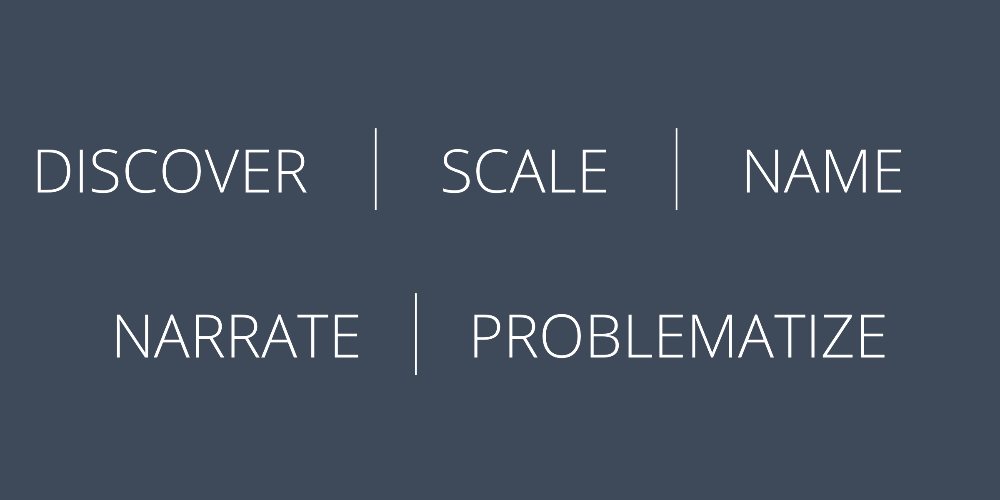

Identify a system at play within your project. Break this system down into the objects, attributes,
relationships, and goals. With your systems map in hand, describe three ways your project can intervene in
that system. Consult Meadows’ “Leverage Points” for breakdown of intervention points

1. Commercial:
Throughout the tenure of my course, I am going to be involved in teams with people from different cultures
and thought processes. Things can become a bit challenging here.
However I believe all people in the course are here with the same vision i.e., to be able to understand
and improve the design and thinking process.
With time we should be able to pick up relevant terminologies for our work and can express to each other
through the same. Language or cultural differences should not impose a barrier here.
2. Empower:
By means of what we are pursing, we get a chance to be able to deliver and reach out to a large section of people. If we use this stage wisely, we can contribute a lot towards empowerment and upliftment of out society. Being designers we have the power to draft and deliver the problem at hand in a way to spread messages and carry out meaningful changes.
3. Educate:
Again, given the platform that we have, we should reach out to people with meaningful content and
information rather than false or seemingly attractive but non practical approaches.
A lot of people, especially the younger audience tends to pick up trends and information from campaigns or
products seen around rather than actual and reliable sources of information. Thus we should be responsible
of what goes out via products we design and develop.
4. Express:
Our designs and product approach is an expression of our opinions too. Even if we stick to the problem
statement and try not to be biased, if somehow reflects in our work.
We need to be conscious and aware of our opinions and how they could affect the product and our design
process.
5. Speculate:
As mentioned, our work is an expression of us as a person, our thoughts and opinions. These also include
what we think about the future, future of things that affect us. These get incorporated into our thinking
process and affected our we shape our ideas.
As practitioners we should make sure that we try not to induce these thoughts into out work as much as
possible, as well as also try to keep ourselves informed about facts and information. This becomes
essential because even if our work tends to get influenced by our thoughts in such things, we are at least
spreading some useful and correct information across.
6. Criticize:
Criticism comes with all types of work. It is about how we take words about our work.
We should be sensitive and wise enough to pick up the right criticism on our work as well as take it ahead
and incorporate it into our future endeavours.